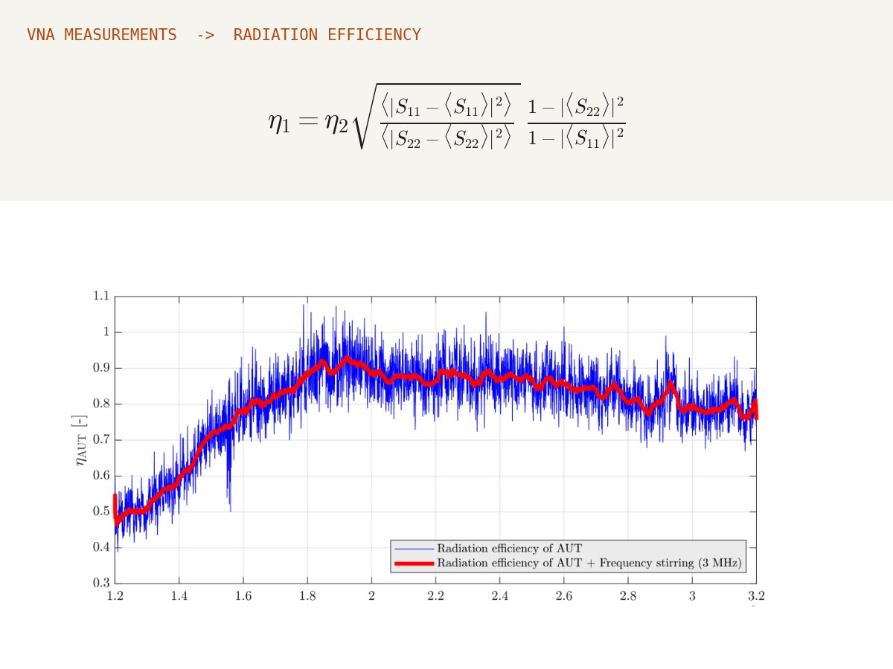
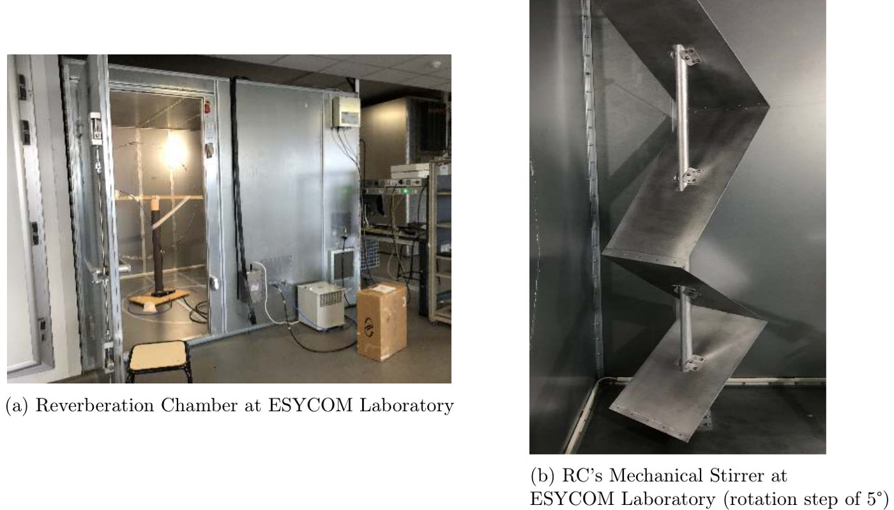
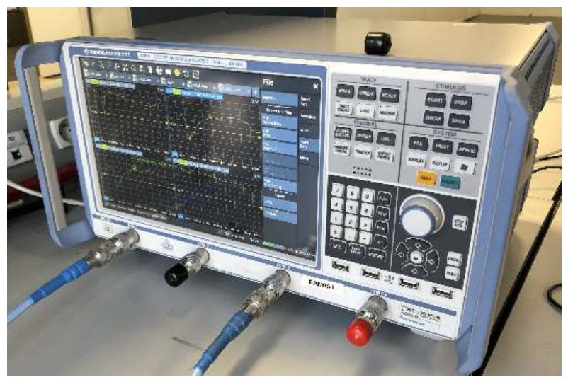
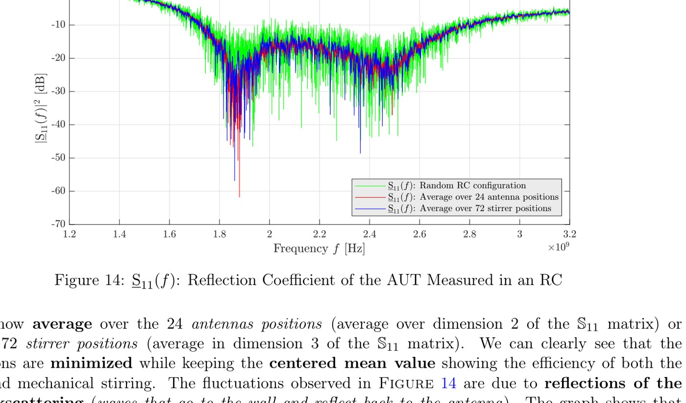
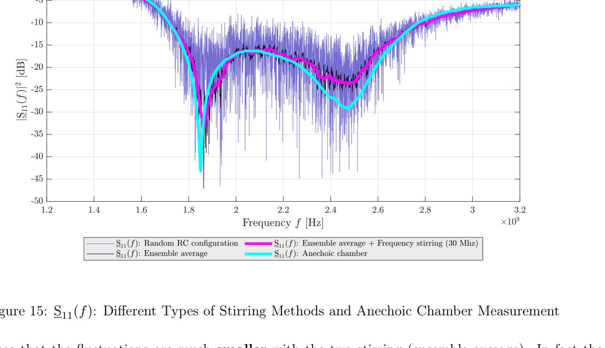
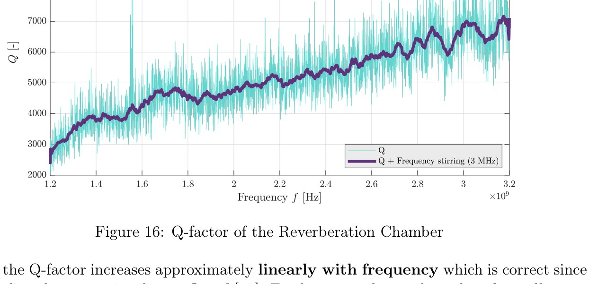
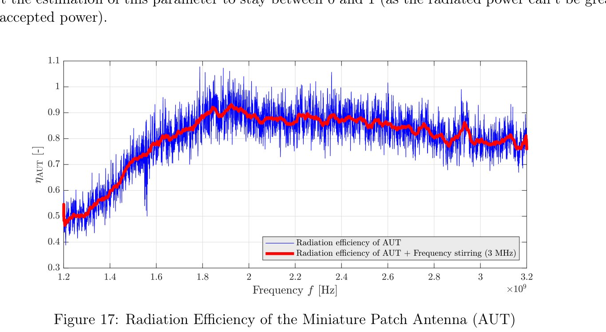

Bachelor graduation project · ESYCOM laboratory, Université Gustave Eiffel · 2020–2021 · supervisor F. Sarrazin · with J. Alfaro
Antenna Efficiency in a Reverberation Chamber
RF measurementsAutomated acquisitionMATLAB

Summary
A reverberation chamber is a metal room with a rotating stirrer: the field inside becomes statistically uniform, so an antenna can be characterised without the expensive anechoic chamber. We measured the radiation efficiency of a miniature patch antenna (antenna under test) against a log-periodic reference antenna, from 1.2 to 3.2 GHz.
The measurement chain was fully automated: a 4-port vector network analyser swept 10,001 frequencies for each of 24 antenna positions × 72 stirrer positions (about 8 hours of acquisition), producing 3D matrices of S-parameters processed in MATLAB.
On the bench
Calibration of the VNA (open/short/match), placement of the antennas to avoid direct coupling, mechanical and source stirring, then data checks: plotting random stirrer configurations, comparing stirring methods by their mean square error against a reference, and finally comparing the result with an anechoic-chamber measurement. Human intervention was reduced to three steps, which is what makes the method precise.
Method & equations
The chamber's quality factor links the received power to the radiated power:
$$Q=\frac{\omega U}{P_d},\qquad \langle P_{\text{rec}}\rangle=\frac{Q\,\lambda^{3}}{16\pi^{2}V}\,P_{\text{rad}}$$Since \(Q\) is intrinsic to the chamber, the non-intrinsic Q-factors seen by both antennas give the unknown efficiency \(\eta_1\) from the known \(\eta_2\):
$$\eta_1=\eta_2\sqrt{\frac{\langle|S_{11}-\langle S_{11}\rangle|^2\rangle}{\langle|S_{22}-\langle S_{22}\rangle|^2\rangle}}\;\frac{1-|\langle S_{22}\rangle|^2}{1-|\langle S_{11}\rangle|^2}$$Stirring methods are compared with \(\mathrm{MSE}=\frac{1}{N}\sum_k|S_{11}(f_k)-\hat S_{11}(f_k)|^2\), and the Q-factor follows the skin depth \(\delta=\sqrt{2/(\omega\mu\sigma)}\).
Figures











